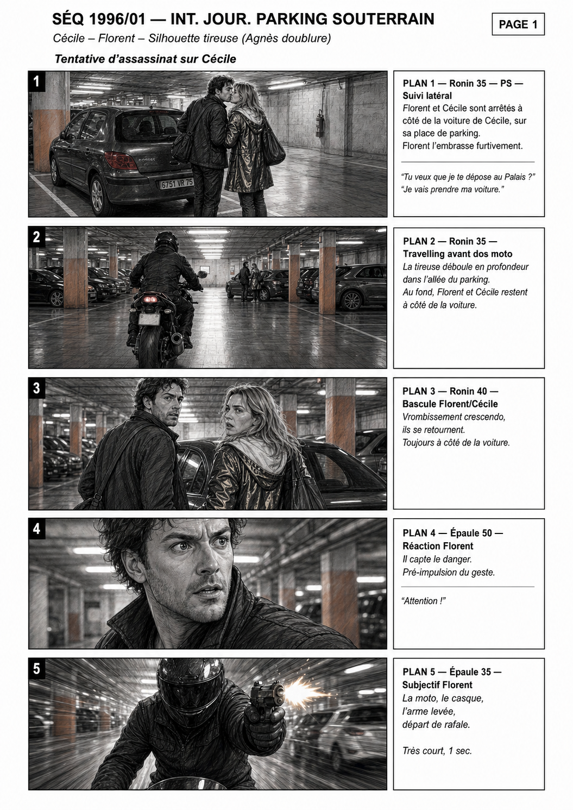
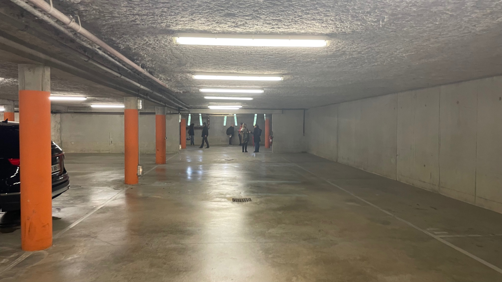
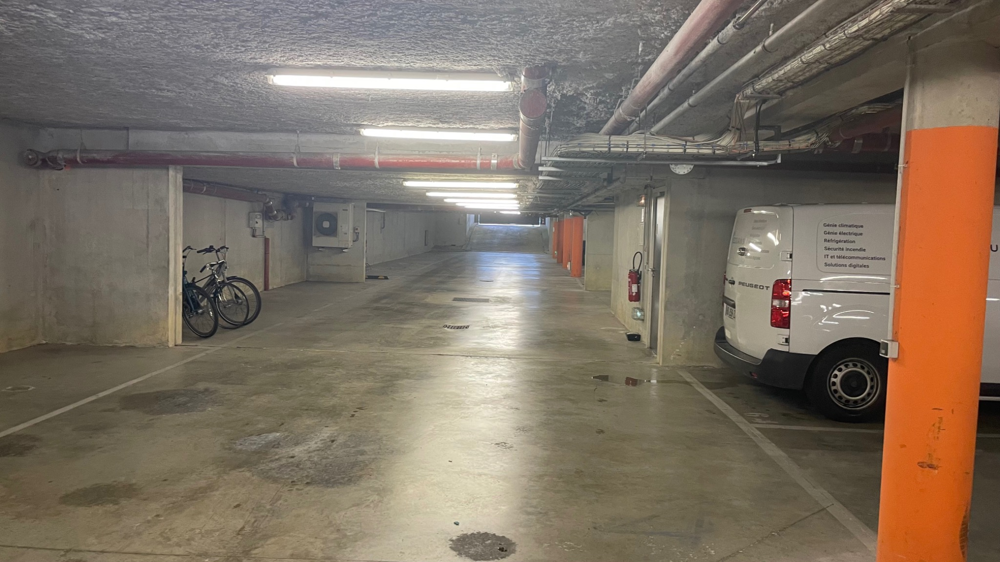
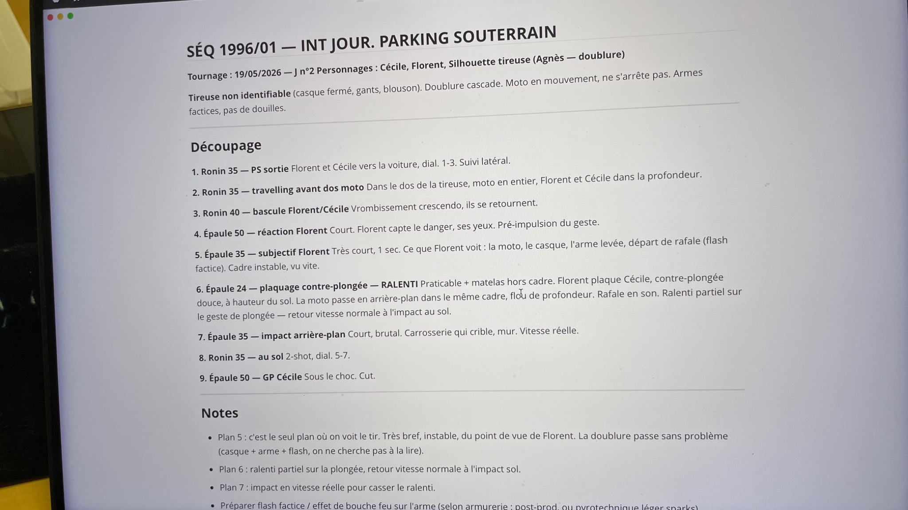
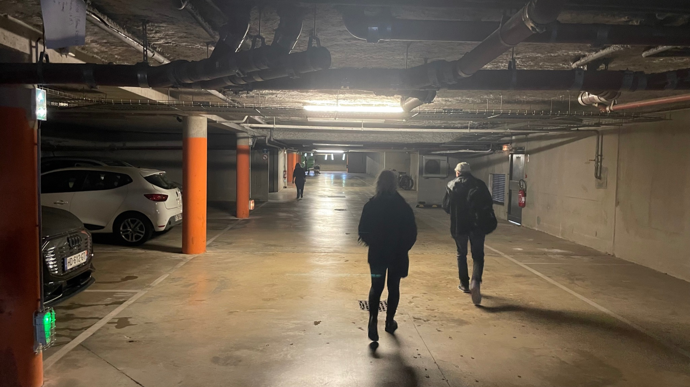
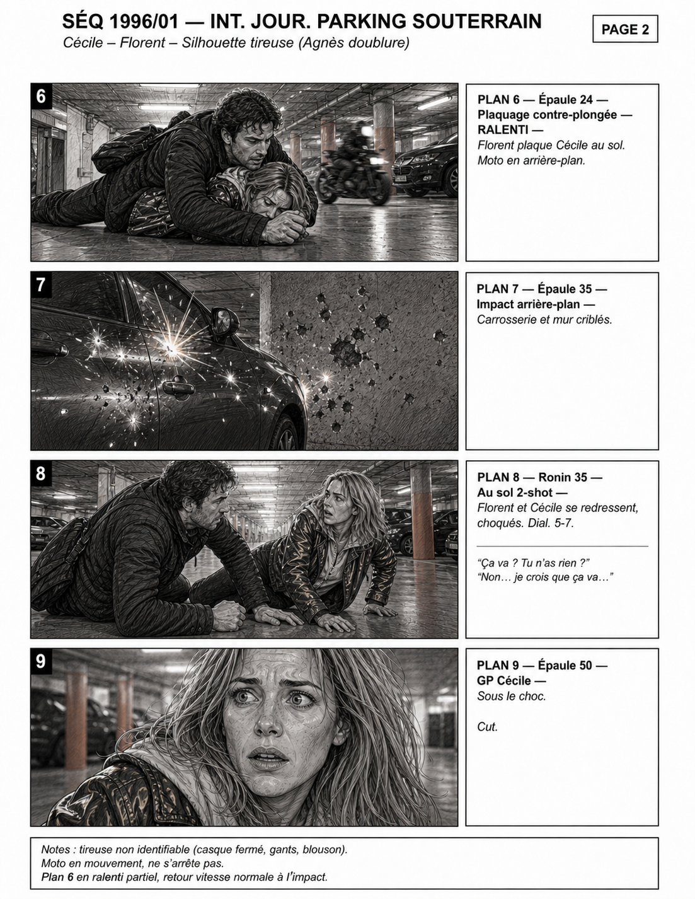

Rapid action visualization

A clear action roadmap before committing crew, vehicles and safety time.
The sequence can be discussed, adjusted and planned before production commits to a complex parking setup.
Breakdown → real parking geography → operational storyboard
A fast visual preparation process used to turn a written parking action beat into a practical storyboard. The goal is to clarify movement, camera positions, stunt rhythm, safety constraints and production needs before arriving on set.
The real underground parking location is assessed first: depth, ceiling height, columns, vehicle positions, lighting, access and possible camera axes.


The written breakdown defines the action beat, the movement and the key dramatic moments. Visual preparation translates this into a shared production reference.

The walk-through helps confirm where characters, vehicles and camera movement can work inside the real space.

The storyboard turns the sequence into a clear visual roadmap. It helps direction, cinematography, production, ADs, stunt coordination and crew understand the action geography before shooting.

Faster planning. Clearer movement. Fewer surprises on set.
Visual preparation turns a complex action beat into a shared roadmap before committing crew, vehicles, safety time and shooting resources.